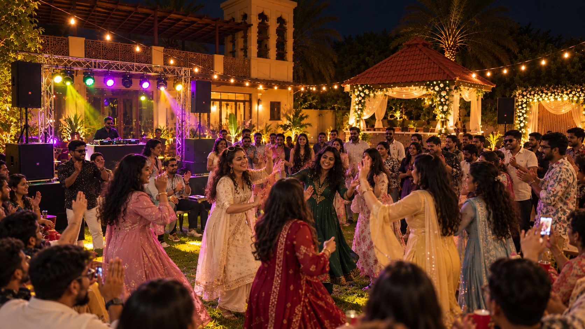
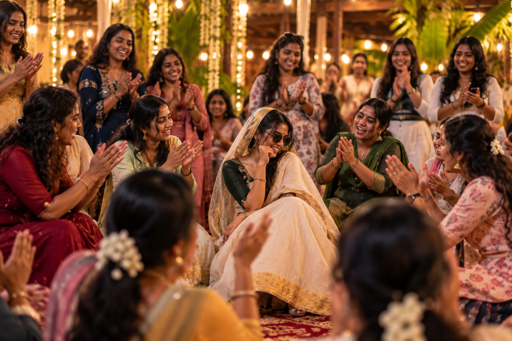
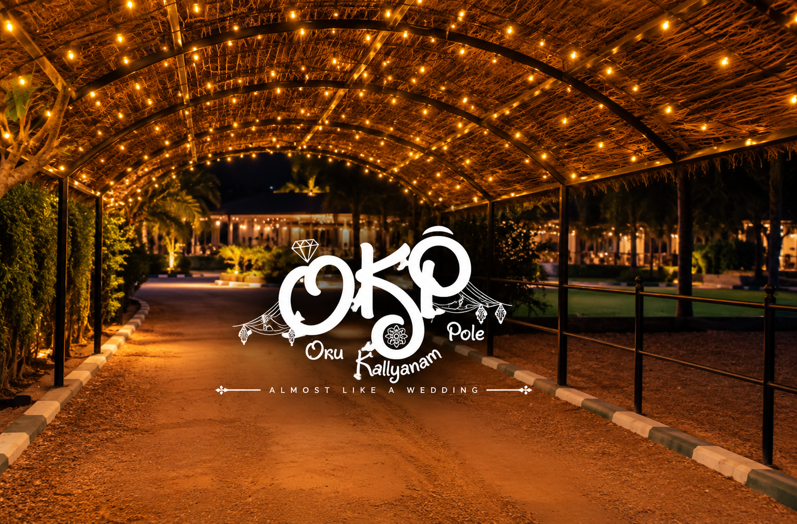
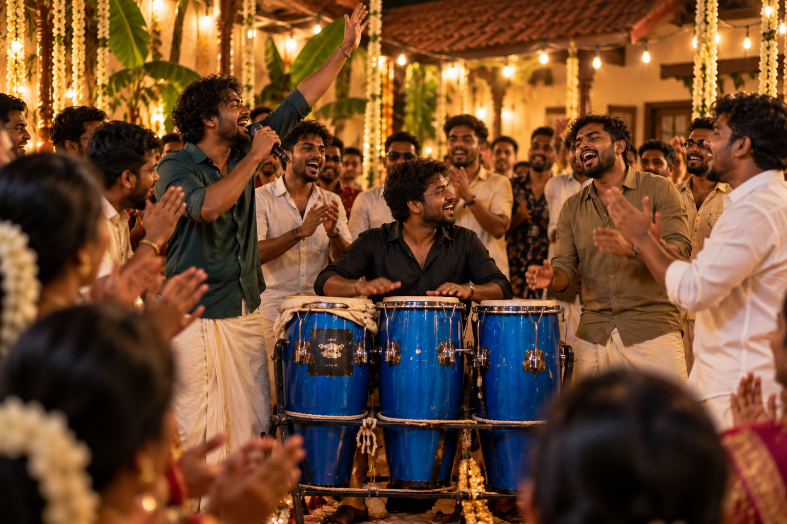
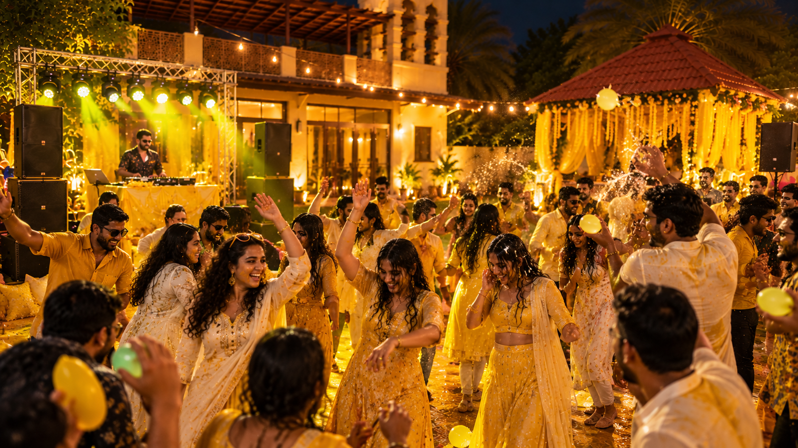
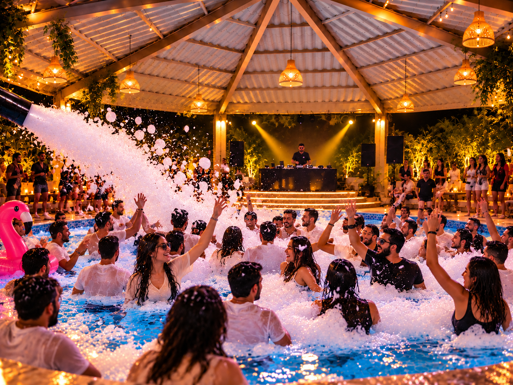
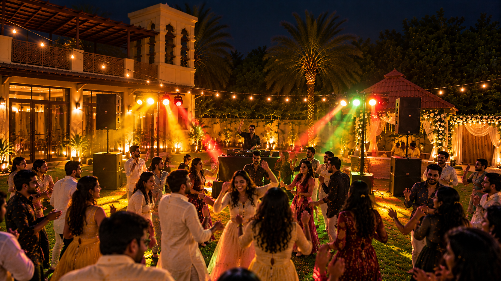
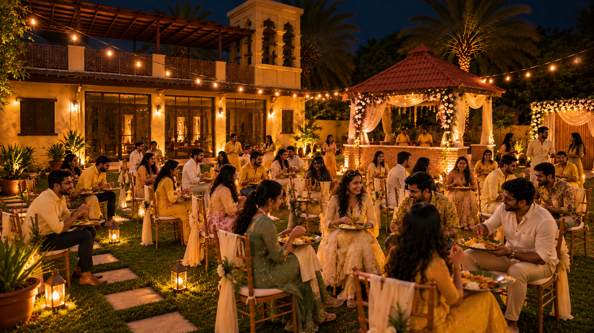

CHAPTER 02
The Programme
24 hours of wedding-house energy.








SATURDAY
BRIDE TEAM CHECK-IN
Settle in. Take over the house. Prepare for the guests.
GROOM TEAM ARRIVAL
The bus arrives. The bride team receives the groom team.
WELCOME & FAMILY INTRODUCTION
Meet the families. Let the teasing begin.
SANGEET NIGHT
Wedding Attire: Party Wear / Wedding Wear. A night of music, performances and full wedding-house energy.
SONGS
DANCE
PERFORMANCES
WEDDING VIBE COMPETITION
BRIDE FAMILY VS GROOM FAMILY
DINNER
Malabar style wedding night rice & chicken curry.
MYLANJI NIGHT
Wedding Attire: Party Wear. A proper Malabar wedding-night vibe with music, rhythm and Mylanchi moments.
OPPANA
MUTTIPPATTU
MEHANDI
HALDI VIBE
Wedding Attire: Yellow casuals. Colors, music and full-on celebration vibes.
LIVE OPEN-AIR DJ
POOL PARTY
FOAM PARTY
SUNDAY
BREAKFAST
Traditional wedding morning Puttu and chicken parts with Sulaimani.
SITE WALK
Recreating that classic wedding-morning moment of heading to the flower shop together to pick up fresh jasmine for the wedding. Optional — a casual site walk around the property, just for the vibe.
REST & UNWIND
Time to slow down. Catch some sleep, take a rest, or simply relax and enjoy the villa at your own pace until checkout..
CHECK OUT
Time to wrap up the wedding house, say goodbye to everyone, grab your things and head home with all the memories and chaos we created together..
UNTIL WE MEET AGAIN
The wedding ends, the house gets quiet, and we all head our separate ways. But the laughs, the chaos, the little moments and the people we shared them with — those come home with us..